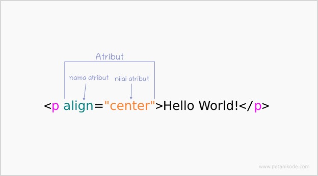

Daftar Isi
Belajar HTML
Hypertext Markup Language atau biasa disebut HTML adalah sebuah bahasa yang digunakan untuk membuat sebuah halaman web. HTML adalah bahasa standar pemrograman yang digunakan untuk membuat halaman website, yang diakses melalui internet. Didalam HTML terdapat istilah dalam HTML, diantaranya sebagai berikut :
- Tag
- Elemen
- Atribut
Mari kita bahas struktur dasar HTML satu per satu
1. Tag
Tag adalah syntax <...> dan </...> yang digunakan untuk membuat sebuah elemen. Ada banyak macam-macam tag, contohnya :
- <!DOCTYPE> adalah tag untuk menentukan tipe dokumen
- <html> adalah tag untuk membuat sebuah dokumen HTML
- <title> adalah tag untuk membuat judul dari sebuah halaman
- <body> adalah tag untuk membuat tubuh dari sebuah halaman
- <p> adalah tag untuk membuat paragraf
- <!--...--> adalah tag untuk membuat komentar
2. Elemen
Elemen adalah sebuah komponen yang menyusun dokumen HTML, bisa dikatakan elemen adalah objek atau simpul HTML yang membentuk satu kesatuan struktur halaman web. Perhatikan gambar di bawah ini.

3. Atribut
Atribut adalah kata khusus yang berada di dalam tag pembuka. Atribut juga biasa disebut sebagai modifier yang akan menentukan prilaku dari elemen. Perhatikan Gambar di bawah ini.
Contoh Soal Latihan
Isi contoh soal disini dengan baik dan benar